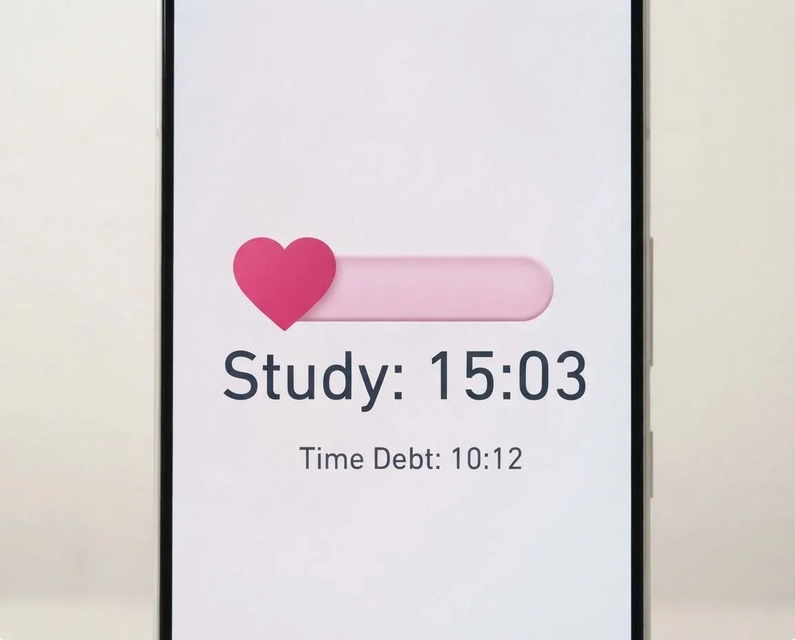
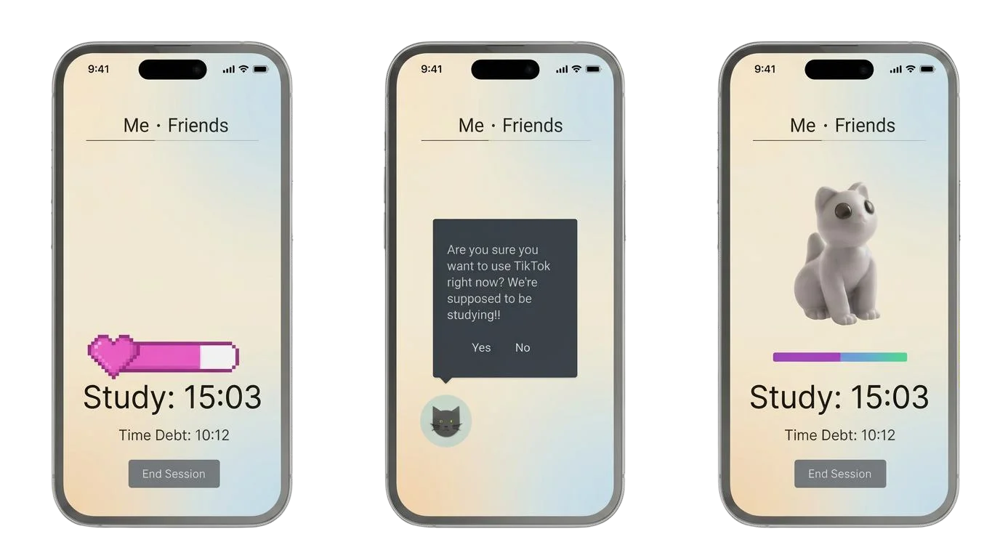

Focus Friend
Behavioural design app
- Role
- UX designer, user testing lead
- Timeline
- Oct - Dec 2025
- Tools
- Figma
- Team
- Team of 3

Problem
Digital distraction pulls attention away from studying and working.
Goal
A gamified focus app, built on the CREATE behaviour-change model, that uses mindful nudges to keep you off your phone while you study.
Research
The design is grounded in HCI course concepts:
Findings:
- Emotion and attachment: a pet whose mood reflects your behaviour
- Attention and task-switching costs: time blocking and app redirection
- Perception: a low-clutter interface so key actions stand out
- Behaviour change: cues, habits, and accountability (CREATE)
Process
Key features and why they exist:
- Physical pet and emotion bar: emotional attachment nudges you to stay on task; its mood rises when you finish a session and drops when you fail
- App usage tracking: a sound plays as an immediate cue when you open a distracting app
- Time debt: distractions create time owed that you make up by studying
- Automatic time blocking with Pomodoro-style breaks, plus app redirection during work time
- Friend connection: comparing results adds mild guilt that motivates repair
Final design

Outcome
Presented findings to peers and instructors.